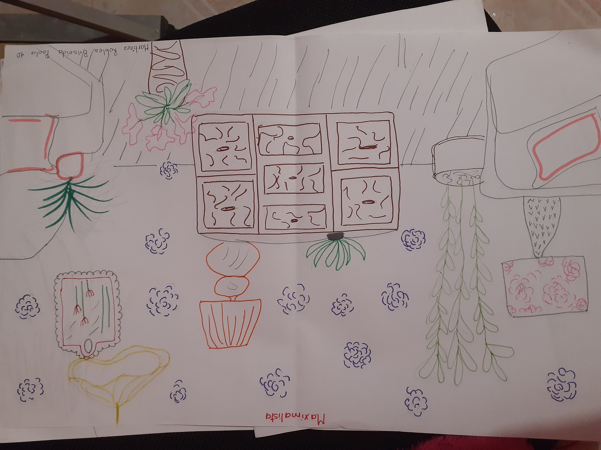
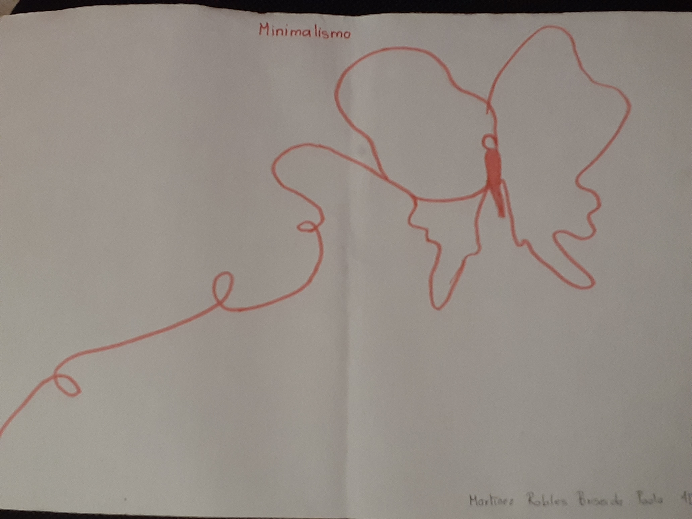
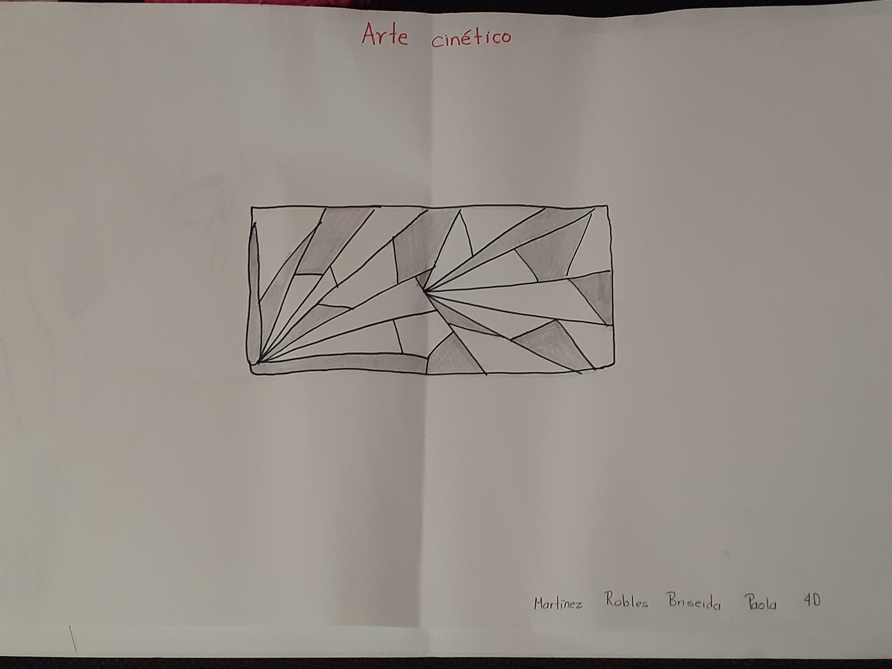
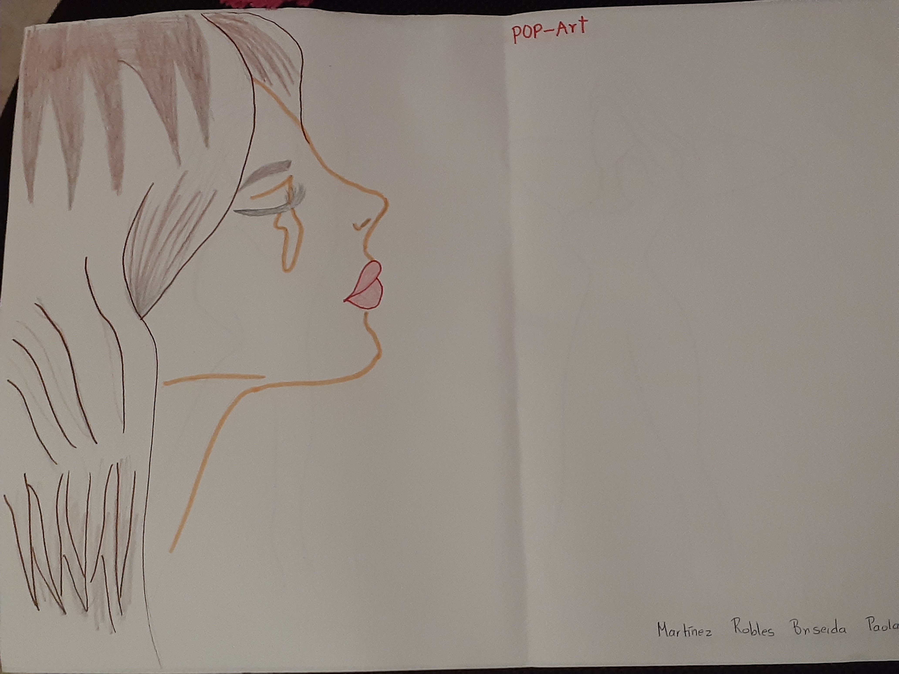
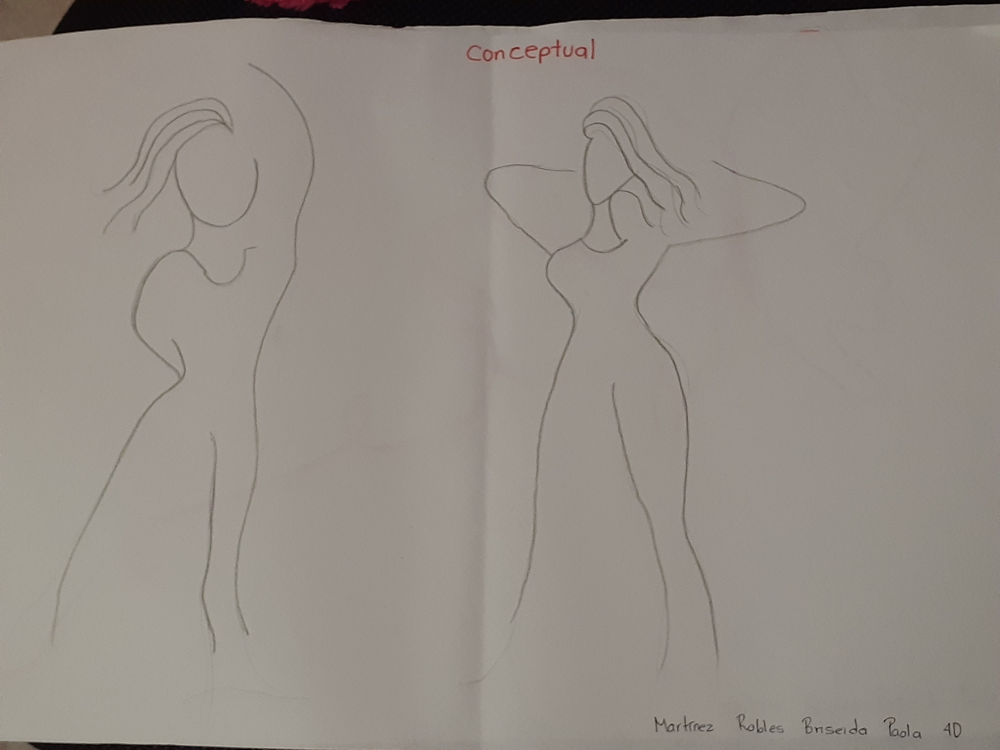

En las artes, el maximalismo es el gusto estético del exceso, que nació en repuesta a la corriente artística opuesta, el minimalismo. Es una tendencia la cual busca implementar la filosofía contraria al minimalismo, en donde se hace uso de la frase “Más es más” para hacer uso de cualquier textura, color, forma, prenda o detalle para generar un caos organizado.
|  | Cuando hice esta obra estaba dejando ir mi mano, lo unico que pensaba era que no todo tiene que ser hermoso para ser bueno, solamente tiene que expresar lo que estoy sintiendo, o lo que mi cuerpo desee expresar sin que mi consciente lo sepa necesariamente. |
En su ámbito más general, es la tendencia a reducir a lo esencial, a despojar de elementos sobrantes. También se utiliza para describir una tendencia en el diseño y la arquitectura, donde la estructura se reduce a sus elementos necesarios. El diseño minimalista ha sido muy influenciado por el diseño tradicional japonés y la arquitectura.
|  | Este tipo de dibujos usualmente son elaborados a un solo trazo, por lo que, este dibujo demuestra que no se necesita ser algo muy detallado, o muy vistoso para ser significativo, pues se nota claramente que la esencia de la mariposa ahí está. |
El arte cinético describe una corriente artística caracterizada por obras que tienen o simulan movimiento. De esta manera, muchas de estas obras se piensan para interactuar con elementos que logren ese efecto de movimiento.
|  | En esta obra podemos observar como la unión adecuada de lo que cualquiera llamaría "Simples lineas" puede formar una ilusión de sombra, de movimiento o de un objeto de mas de dos dimensiones, y en este caso vemos a varios triangulos con sombras que se unen, formando una especie de rectangulo con varios triangulos en el centro. |
Arte pop es un movimiento artístico surgido en Reino Unido y Estados Unidos a mediados del siglo XX, inspirado en la estética de la vida cotidiana y los bienes de consumo de la época, tales como anuncios publicitarios, comic books, objetos culturales.
|  | En este dibujo se muestra a una chica llorando, donde podemos ver a detalle lo que esta haciendo con colores para representar a este arte y a lo colorido que puede llegar a ser y tambien poder apreciar como es que las personas se identifican con la imagen. |
El arte conceptual es un movimiento artístico en el que la conceptualización o la idea, es más importante que la obra de arte en tanto objeto físico o material.
|  | En este tipo de arte lo que se intenta precisamente es demostrar la idea detrás de la obra, pues en esta especificamente, lo que se intenta expresar es el baile, el como un simple dibujo puede representar algo tan bonito y significativo para muchos. |